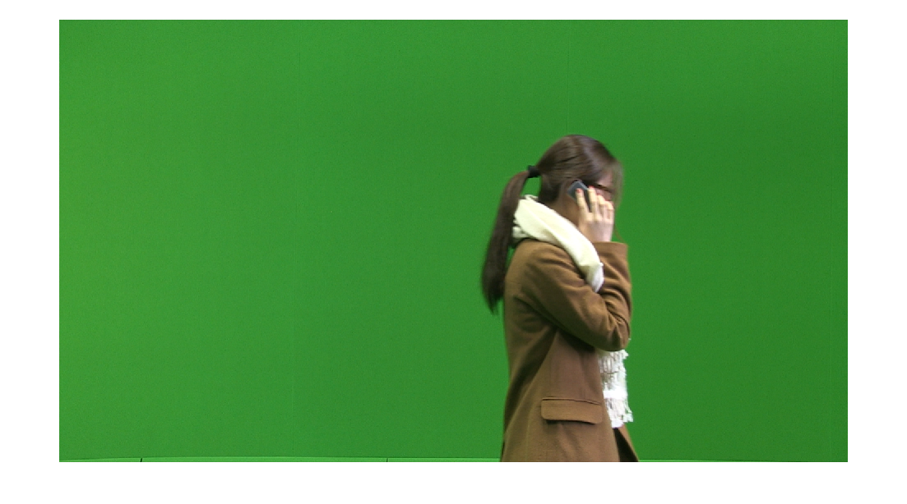
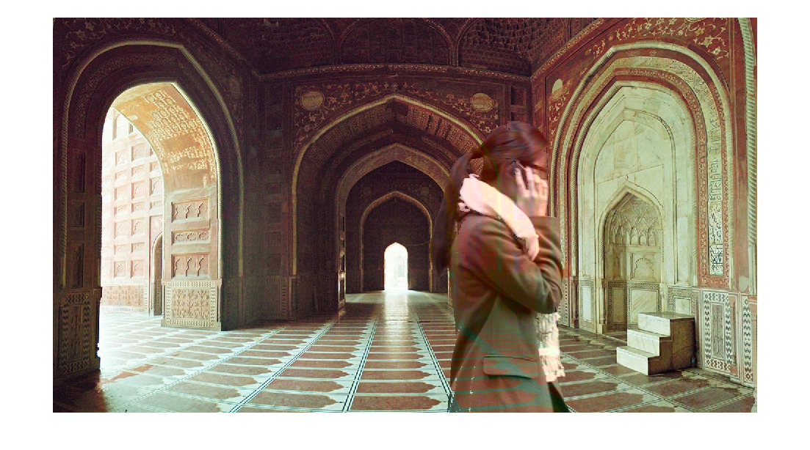

clear
clc
close all
im = imread('/home/sajal/3-1/DIP/Assignments/assignment3/green.png');
figure,imshow(im)
imfore = zeros(size(im,1),size(im,2));
imback = imread('/home/sajal/3-1/DIP/Assignments/assignment3/background.jpg');
imback = imresize(imback,size(imfore));
imf = imback;
imback = rgb2ycbcr(imback);
im = rgb2ycbcr(im);
imf = rgb2ycbcr(imf);
imref = im(1:200,1:200,:);
THRESH = 2000;
meanval = zeros(1,3);
meanval(1) = mean2(imref(:,:,1));
meanval(2) = mean2(imref(:,:,2));
meanval(3) = mean2(imref(:,:,3));
imres = reshape((im),size(im,1)*size(im,2),3);
imforeres = reshape((imfore),size(imfore,1)*size(imfore,2),1);
meanval = repmat(meanval,size(imres,1),1);
diff = double(imres)-meanval;
sqdiff = diff.^2;
dist = sum(sqdiff,2);
fore = find(dist > THRESH);
back = find(dist <= THRESH);
[x y] = ind2sub(size(imfore),fore);
[p q] = ind2sub(size(imfore),back);
for i=1:size(x,1)
imf(x(i),y(i))=0.95*im(x(i),y(i))+0.05*imf(x(i),y(i));
end
imfinal = ycbcr2rgb(imf);
figure,imshow(imfinal)
Warning: Image is too big to fit on screen; displaying at 67%
Warning: Image is too big to fit on screen; displaying at 67%
 